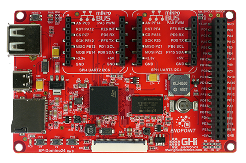
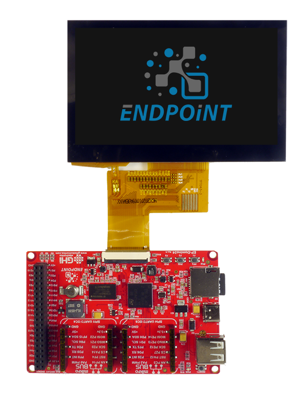
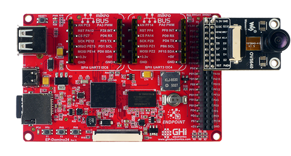

Endpoint Single Board Computers
Endpoint Domino

The Endpoint Domino provides an easy prototyping and evaluating board option, that is low-cost and user friendly.
Features:
- Display connector
- 2x mikroBUS headers
- USB Host
- User LED
- Buzzer
- 40-pin expansion header
- microSD card slot
- USB-C connector
Pinout
Displays

The display FPC connector on EP-Domino uses a common pinout available on many displays. Some of these displays include capacitive touch screens, which are supported as well.
| Pin | Function |
|---|---|
| 1 | Backlight Cathode (-) |
| 2 | Backlight Anode (+) |
| 3 | GND |
| 4 | 3.3V |
| 5-12 | Red Data (top 5 bits only) |
| 13-20 | Green Data (top 6 bits only) |
| 21-28 | Blue Data (top 5 bits only) |
| 29 | GND |
| 30 | Clock (PCLK) |
| 31 | Enable (Connected to 3.3V) |
| 32 | Horizontal Sync (HSYNC) |
| 33 | Vertical Sync (VSYNC) |
| 34 | Data Enable (DE) |
| 35 | Not Connected |
| 36 | GND |
| 37 | Cap Touch Interrupt |
| 38 | Cap Touch Reset |
| 39 | Cap Touch SCL |
| 40 | Cap Touch SDA |
Here is a list of displays with capacitive touch we have tested from www.buydisplay.com
| Display | Type | Link |
|---|---|---|
| ER-TFT043-3 | 4.3" 480x272 | Link... |
| ER-TFT043A3-3 | 4.3" 480x272 | Link... |
| ER-TFT043A1-7 | 4.3" 800x480 | Link... |
| ER-TFT070A2-4 | 7" 800x480 | Link... |
See the DisplayController example in Libraries->Endpoint API for details on how to configure the system for the desired display.
Cameras
The Endpoint OS supports cameras through USB and parallel. For added convenience, the top side of the 40 pin header is pinout compatible with the off-the-shelf OV5640 camera board.

mikroBUS
Endpoint Domino has 2 mikroBUS headers compatible with over 1000 click modules.
Wi-Fi
Endpoint Domino Wi-Fi using a the tp-link Wireless N Nano USB adapter.